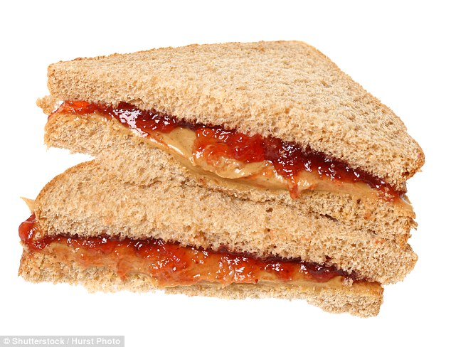

Describe: A peanut butter jelly sandwhich is my favorite sandwhich because it has lots of peanut butter and with the jelly it makes it really smooth and smooshy
The Ingredients
The Ingredients needed for this PB and J sandwhich is the skippy brand of Peanut Butter. Then get one jar of the strawberry jelly. After you get these two ingredients it is time to hit the store. You will need 4 slices of bread. A butter knife, A cutting board, and a sharp cutting knife.
1. Lay all four slices of bread on the cutting board.
2. Grab the peanut butter and smoothen the peanut butter on the bread so that it is smooth
3. Grab the jelly and put it on the other slice of the bread. After you do that you need to gently spread the jelly around the whole bread.
4. Carefully place one side of the bread on top of the other side.
5. You repeat the same step and so it again onto another peace of bread.
6. Then rub peanut butter and jelly inbetween both sandwhiches adn combine both PB and J sandwhiches together
7. Use the cutting knife and the sandwhich in half. Finally you will have two four staked bread PB and J sandwhich. The last step is to Enjoy your sandwhich.
